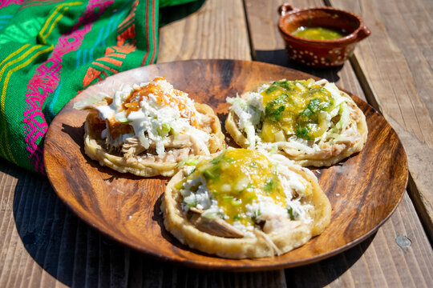

1. Sushi
Sushi- It is my favorite becasue It is filling and tastes great! It is also good for you and wont leave you feeling bloated or sluggish!
Sushi Videos :)
2. Tacos
Tacos - Tacos are are great because they taste amazing and you dont need utinsels. Tacos remind me of spending time with family in mexico!
Taco Videos :)

3. Sopes!
Sopes - They have a special place in my heart Theres a spot in mexico thats open once a week that sells the best sopes ever. To die for.
Sope Videos.jpg)